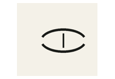

SHEET 17B / OCCURRENCE COPY / NOT A DICTIONARY

A1眼周、观察位置 A2说话、歌唱旁
A2说话、歌唱旁 A3屋内侧、家庭物件
A3屋内侧、家庭物件 A4身体图、分配记录
A4身体图、分配记录 B1旧路口、脚印旁
B1旧路口、脚印旁 B2雨后石边、水痕旁
B2雨后石边、水痕旁 B3折返、方向变化
B3折返、方向变化 B4口部、饮食与发声旁
B4口部、饮食与发声旁页边注：编号为1978馆藏整理时添加。采集者没有给这些形写固定中文释义，只记录出现位置。缺口方向在部分复写件中变化，可能承担语法或方位作用。

A1眼周、观察位置A2说话、歌唱旁A3屋内侧、家庭物件A4身体图、分配记录B1旧路口、脚印旁B2雨后石边、水痕旁B3折返、方向变化B4口部、饮食与发声旁页边注：编号为1978馆藏整理时添加。采集者没有给这些形写固定中文释义，只记录出现位置。缺口方向在部分复写件中变化，可能承担语法或方位作用。